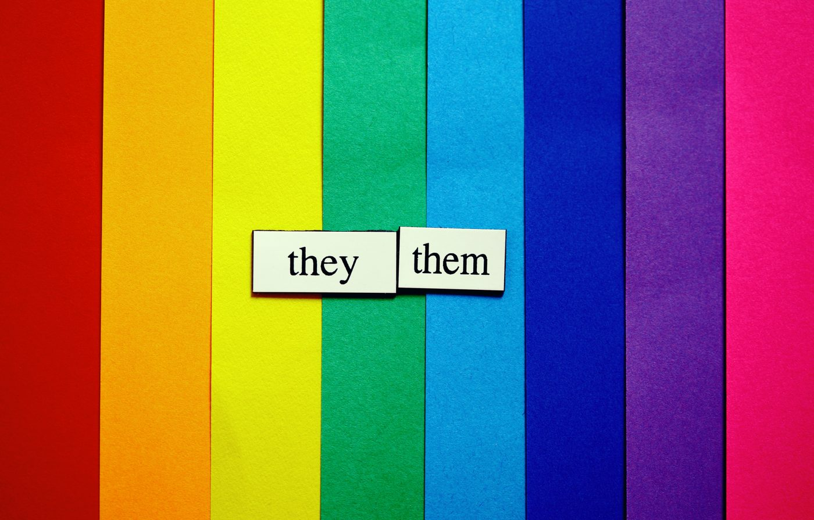
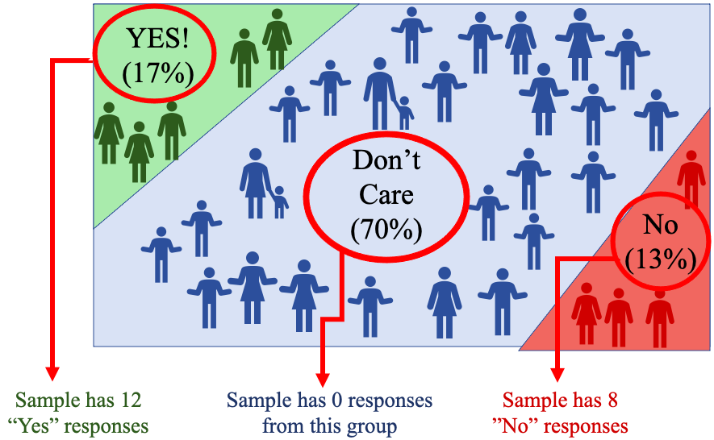
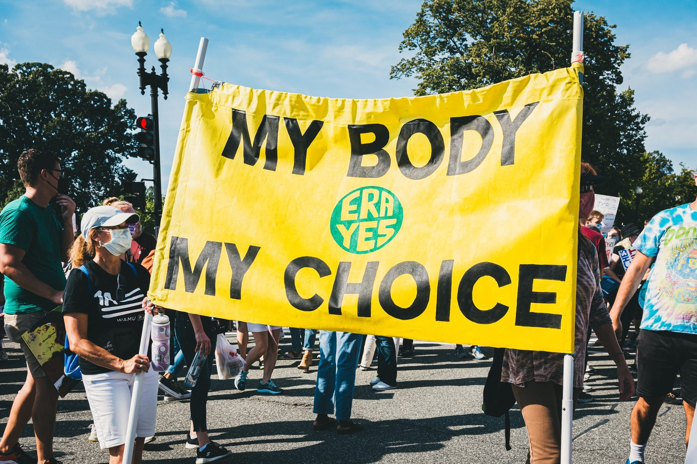
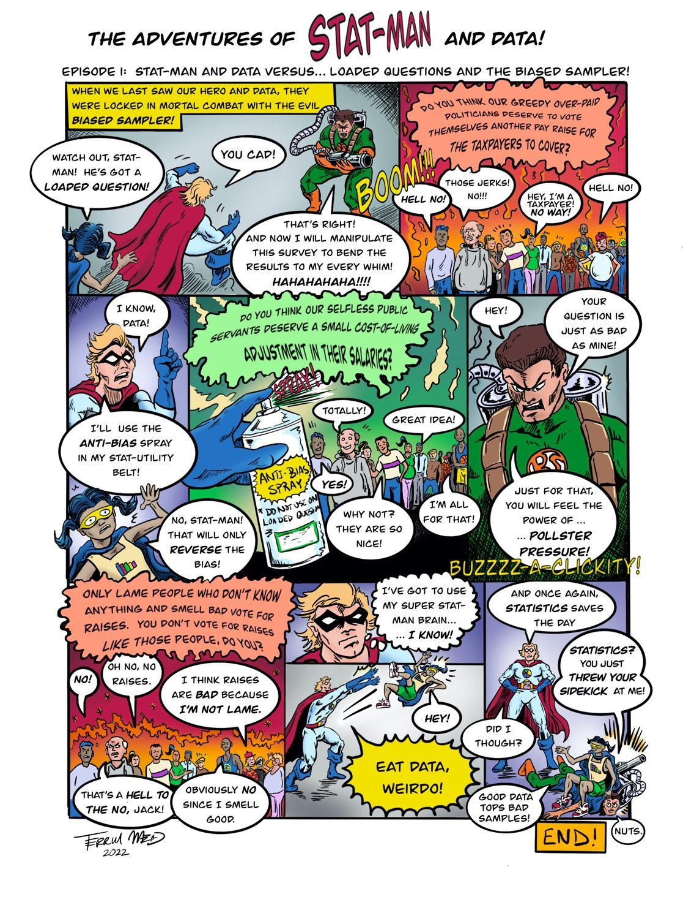

Section 1.4: Types of Error in Statistics
Learning Objectives
1.Understand how errors can be introduced during sampling.
2.Identify and differentiate between sampling errors and non-sampling errors.
3.Categorize non-sampling errors due to-
•Sampling bias
•Response bias
•Non-response bias
4.Identify common sources of non-sampling errors such as-
•Incomplete frame
•Misrepresented answers
•Pollster pressure
•Interviewer error
•Wording of questions


Figure 1.15. The process of statistics, with steps one and two complete.
At this point in the process of statistics, we have (1) identified the population and a question or questions we need answered and (2) collected the data. To organize and summarize the data (step 3), and to make a meaningful inference (step 4), we need to know that the data is a fair representation of the population. If the data we collected fairly represents the population, we can feel confident about the results and conclusions we reach. But if the data we collected is not a representative sample, the results we reach could be incorrect!
In this section we will discuss how error is introduced when sampling and identify sources for error we can avoid.
The first thing to note is that using a sample to represent a much larger population will always introduce a (hopefully) small error. Remember that every sample will be different, and so the results will also be different. The differences in results from different samples are known as sample variations. But if our data collection is sound, the different samples will share similar characteristics with the population, and so the results will provide a good estimate for the population.
The error introduced by using a sample to represent a population is called the sampling error. You have probably seen this called a “margin of error” in polling. This kind of error is expected because you have decided to not complete a census either because it is impossible or extremely difficult. But if the sample we use is representative of the population, the result from our sample should be close to the result we would get had we used a census. That is always the hope when using sampling techniques. A sampling error is necessary and unavoidable when you use a sample to represent a larger population. It is not a serious flaw in the study.
Definition 1: Sampling Error
Sampling Error – This is the natural error that occurs when using samples to represent a larger population. Variation between samples will always produce small differences between sample results. Sampling error is expected and acceptable in any study using samples. It does not indicate a serious flaw. Results obtained can be trusted.
GOOD!
The second type of error is due to a serious flaw of some kind. It is called a non-sampling error. These types of error are the result of a bias in the data collection, or other serious mistake. These types of errors render any conclusions you reach unreliable. Basically, if you have a non-sampling error, your results are useless. This is a serious error, and you should always take great pains to avoid them!
Definition 2: Non-sampling Error
Non-sampling Error – This is a serious error that occurs due to mistakes collecting or recording the data. This error does not occur due to natural variations between samples. It means that the data do not represent the population, and the results are meaningless, or worse, misleading. Results obtained cannot be trusted!
BAD!
There are lots of mistakes we can make that will result in non-sampling errors. In each case, the non-sampling error produces a bias in the data. A bias is present in the data if some characteristic of the population occurs far more often (or far less often) in the sample than in the population. In simpler words, some groups are over-represented in the sample while others are under-represented. For example, if you create a survey intended for college students, but accidentally give it to retired persons, you have created an age-bias. The results may reflect the population of retired persons, but not the population of college students you intended.
Non-sampling errors can be broken down into three types, depending on whether the error was due to poor techniques in data collection, lack of participation in subjects, or difficulty getting accurate responses from participants.
Definition 3: Non-sampling Error Categories
Non-sampling errors can be split into three categories.
•Sampling bias- Occurs when the methods used to collect the sample data are flawed.
•Non-response bias- Occurs when individuals who fail to respond or complete a survey differ in opinion from those who do.
•Response bias- Occurs when the answers on the survey do not accurately reflect the true feelings of the respondent.
Examples of Sampling Bias
Recall that to use a simple random sample, we need to have a frame, or a list of all the individuals in the population. Sometimes it is difficult to get a complete frame. If the frame is missing sectors of the population, it may contain a bias that could render your results meaningless. This is known as having an incomplete frame.
Definition 4Incomplete Frame
Incomplete Frame- This is a sampling bias that occurs when the frame is missing some segment of the population.
Example 1: The 2016 Election Polls
Prior to the presidential election in 2016, polls showed that democrat Hilary Clinton had a 7% lead over republican Donald Trump. However, Donald Trump was elected president. Why did the polls get it wrong?
Solution: There were multiple issues in this survey, some not the fault of the pollsters. It is always problematic to use a popular vote to predict how the electoral vote will conclude. But one contributing factor was that the pollsters did not have a complete frame. When pollsters survey voters, they identify who is a “likely voter” and use them to create the frame. In 2016, the frame of likely voters included too many democrats and not enough republicans. They reasoned, in part, that “likely voters” would be people who had voted in the 2012 election. But many voters who cast votes for Barack Obama did not cast a vote for Hilary Clinton (so democrat voters were overcounted in the polls). Similarly, there were republican voters who did not vote in 2012 but did show up to vote for Donald Trump (so republican voters were undercounted in the polls). Since the frame had too many democrats and not enough republicans, it led the pollsters to overestimate the support for Hilary Clinton. It is worth noting that Hilary Clinton did win the popular vote by a small margin, so the polling was not far off, but the result was much closer than the pollsters predicted.
Sometimes during personal interviews, the interviewer can intentionally or unintentionally bias the response from the individual with body language or attitude. Good interviewers are trained to avoid biasing the results. A positive and outgoing interviewer might get different results from a negative and unfriendly interviewer, even when interviewing the same people and asking the same questions.
Definition 5Interviewer Error
Interviewer Error- Results when the interviewer biases the response through their body language or attitude.
Another potential source of sampling bias comes from the survey itself. The design of the survey could influence how an individual responds. This is called questionnaire design error. For instance, asking for personal information at the beginning of a survey can lead individuals to feel suspicious and guarded in their responses. Likewise, multiple questions from a specific perspective can lead responders to answer with what they think you are looking for.
Definition 6Questionnaire Design Error
Questionnaire Design Error- Results when the design of the survey influences individuals to answer questions in a specific way.
Example 2: A Poorly Designed Questionnaire
A survey was created that asked subjects about exercise. The first question asked the respondent if they knew that exercising three times per week would improve their health. The next question asked the respondent if they exercised three times weekly. What is wrong with this survey?
Photo by Kelly Sikkema (opens in a new tab) on Unsplash (opens in a new tab)
Solution: Survey takers will often give the answer they think the researchers are looking for in the survey. The respondent knows that the researchers think everyone should be exercising three times per week since the first question tells them that. So now they would want to claim they exercise, even if that is false. They may feel shamed into saying they exercise, when in fact, they might not. Or they might exaggerate their exercise habits to fit in with what the researchers are looking for. A better survey would skip the first question or put the questions in the reverse order. Survey takers are likely to be more honest in answering whether they exercise weekly if the researchers don’t hint that the answer should be “yes.”
Sometimes the wording used in a question can cause hidden biases to influence the response.
Definition 7Phrasing of Questions Error and Loaded Questions
Phrasing of Questions Error- Results when the wording of the questions influences the response. These may unintentionally happen. If a question is intentionally worded to elicit a desired response, it is called a loaded question.
Example 3: A Poorly Worded Question
Following are three versions for a question on a survey. What are the problems with each question as written? Which one is worded the best?
1.Do you think police and fire fighters should be allowed to retire early? (Yes or No)
2.Do you think police and fire fighters should be forced to retire when they are physically unable to do the job? (Yes or No)
3.Do you think police and fire fighters should be allowed to continue working when they are physically unable to do the job? (Yes or No)
Solution:
1.Do you think police and fire fighters should be allowed to retire early? This question has no context. Many people would respond “No” but might change their response to “Yes” if they were informed the question pertained to workers who were no longer physically capable of doing the job.
2.Do you think police and fire fighters should be forced to retire when they are physically unable to do the job? This question has a negative connotation. People will not feel comfortable “forcing” retirement on someone. For this reason, more people will respond “No” than “Yes.”
Photo by Matt C (opens in a new tab) on Unsplash (opens in a new tab)
3.Do you think police and fire fighters should be allowed to continue working when they are physically unable to do the job? This is really the same question as (2), but this version uses more positive language. A “No” response to question (3) is the same as a “Yes” response to question (2). But respondents are more likely to say “No” to forced retirement than they are to say “Yes” to allowing them to continue working. The difference in the results of the two questions is due to the phrasing of the question and not the feelings of the respondents.
So which question is best? Probably none of the questions are very good. It is difficult to write a question that has neither a positive connotation nor a negative connotation. Entire courses are taught on how to create and design surveys with good questions. Writing good questions that will correctly gauge how people feel is hard!
Example 4: Two Loaded Questions
Consider the following questions. What makes each one loaded? How do you think most people would respond?
1.Do you think our overpaid politicians should be allowed to vote themselves another pay raise for the taxpayers to cover?
2.Do you think our public servants deserve a small cost-of-living adjustment in their salaries?
Solution:
1.Do you think our overpaid politicians should be allowed to vote themselves another pay raise for the taxpayers to cover? This question is clearly designed to get a “No” response. The word politician has a negative connotation, they are overpaid, they get to vote it for themselves, and all the taxpayers (like us!) pay for it. All the negative language will cause people to choose “No” without really thinking about it. Few people would respond “Yes”.
2.Do you think our public servants deserve a small cost-of-living adjustment in their salaries? This second question could be a mirror of the first, but with positive connotations. Politician has been changed to public servant, pay raise has been changed to small cost-of-living adjustment, and the part about taxpayers paying for the raise is left out. This question will be answered with a “Yes” far more often than the first version. But it too is loaded and therefore flawed.
Examples of Nonresponse Bias
A nonresponse bias occurs when individuals who fail to respond or complete a survey differ in opinion from those who do. What are some ways that could happen?
Sometimes individuals who agree to participate change their mind. If they don’t complete the survey, it is a nonresponse. When I give surveys in my classes, sometimes students are absent, so I don’t get an answer. Again, that is a nonresponse. These simple nonresponses are okay. The problem is that sometimes the people who do not respond share an opinion that we miss in the results. Nonresponses can cause us to make incorrect conclusions when there is a systematic undercounting of people who have the same opinion.
Example 5: A Nonresponse Bias
In a survey, the first question asks subjects to select their gender as either male or female. When the survey results are calculated, 4% of survey takers submitted a blank survey. What went wrong?

Photo by Katie Rainbow 🏳️🌈 (opens in a new tab) on Unsplash (opens in a new tab)
Solution: Not all people identify as male or female. If you ask people to identify their gender, you need to provide options that represent them. Pew Research center estimates that about 11% of the LGBTQ+ population in the United States identify as non-binary and would not be able to answer the question (if the only options are male and female). A non-binary individual could be annoyed by the first question and not complete the survey. If that happened often, the survey might exclude the opinions of persons who do not identify as male or female. Could this affect the conclusions? If the remaining survey questions are about pizza, it might not affect the overall outcome. But if the survey is about legal protections for marginalized groups, an important segment of the population may have been missed.
To improve the question, the researchers could add “neither”, “not male or female”, “prefer not to say”, “other”, etc. to the male and female options. The main point is the survey needs to be designed in such a way that everyone can see themselves fitting into one of the choices.
To avoid nonresponses, it is best to conduct surveys in person. People are more likely to complete the survey if you are with them while they do it. If it can’t be done in person, the next best option is to complete the survey by phone. This is not as effective, since many of us ignore phone calls asking for us to complete surveys. Our phone numbers change, our charges are too low, service is poor, or any number of things can keep us from participating. So, nonresponses are more of a problem using the phone. If you can’t conduct the survey in person or by phone, the last resort is to do it online. This is the least effective at getting individuals to participate. Online polls generally get 10-30% response rates. A response rate of 30% is considered good, but that means that 70% of people did not complete the survey. It is possible that the 70% of people who did not participate had a very different opinion than the 30% that did. So, we must be careful when we look at the results.
You probably get emails, texts, or phone calls regularly asking you to participate in surveys. How often do you participate? Most of us ignore most or all attempts to get our feedback. But every so often, you might find yourself interested in the topic and take the time to fill out the survey. The type of survey we are discussing is called self-selected, or voluntary. Self-selected surveys were discussed briefly in section 1.2. In a self-selected survey, the participants decide whether to participate. The problem is that only the people who care about the issue will participate. That might leave a large segment of the population out because they did not respond to the survey. This is a nonresponse bias, and the results would not be scientifically valid.
Definition 8Self-selected Survey
Self-selected Survey- Results when the individual decides whether to include themselves in the study. This will overcount people with strong opinions and undercount people who don’t care about the subject. The results are not reliable!
Example 6: Does Pineapple belong on Pizza?
Suppose that 17% of people like pineapple on pizza, while 13% of people do not. A brief online poll asks the question “Does pineapple belong on pizza?”. There are 20 responses to the survey, 12 responses say “yes” while 8 responses say “no”. The researchers conclude that 60% of people think pineapple belongs on pizza. Why is their conclusion in doubt?
Solution: Looking at the diagram in figure 1.16 we can see that 70% of the population does not care about the question, and those people did not participate in the poll. All participants came from the strongly opinionated minority.

Figure 1.16: Population of people and their opinions of pineapple on pizza, and misleading self-selected sample.
Photo by bckfwd (opens in a new tab) on Unsplash (opens in a new tab)
The math is done correctly since the conclusion is that 12 out of 20, or 60% of responders, say that pineapple belongs on pizza. But the sample did not include representation from all points of view. People who don’t care about the question did not participate, only those who felt strongly either way did. So even though the true percentage of people who think pineapple belongs on pizza is 17%, we are misled by the self-selected survey to think that 60% feel that way.
Examples of Response Bias
A response bias occurs when the answers to the survey questions do not accurately reflect the true feelings of the respondent. This can happen for many reasons. Sometimes people don’t want to admit to unseemly opinions or behavior. People can lie, or give the answer they feel is most acceptable, even if it is not accurate. For example, asking for information regarding potentially embarrassing or private social issues is difficult. If you ask in a survey if a person is the victim of domestic abuse, many individuals who are abused will not wish to admit it, and will respond negatively, causing your results to be inaccurate.
Other times, people will have a view of themselves that is not supported by the facts. For example, if you ask people how much time they spend on their phones, they might underestimate it. Any data that is self-reported can potentially be underestimated or overestimated, depending on the personal views of the individual. In medicine, intake surveys often ask how much time a patient exercises each day and how many alcoholic drinks they consume per week. Most people will overestimate the amount they exercise and underestimate the amount of alcohol they consume. It is not necessarily deliberate, but the result is that the data collected are biased.
Definition 9Misrepresented Answers
Misrepresented Answers- Results when the individual does not give truthful information, either intentionally or unintentionally. These errors can result when survey takers lie to avoid embarrassment or exaggerate the truth. The results are not reliable!
When people are untruthful because they don’t want to admit to unpopular opinions or bad behavior, we say they are succumbing to pollster pressure.
Example 7: Pollster Pressure and Misrepresented Answers
Imagine you are in class and your professor gives a survey with the following questions. Do you think most people will answer honestly?
1.Do you regularly use illegal drugs?
2.Do you consider yourself to be a racist?
3.How often do you wash your hands?
4.Are you a victim of domestic violence?
5.Are you verbally abusive to your family or friends?
Solution: As you read through those questions, you probably felt pressure to answer the questions with the answer written in red.
1.Do you regularly use illegal drugs? No
2.Do you consider yourself to be a racist? No
3.How often do you wash your hands? Very often
4.Are you a victim of domestic violence? No
5.Are you verbally abusive to your family or friends? No
If a person used illegal drugs, they would likely not want to admit it to their professor, even if the survey was anonymous. Neither would they want to admit to being a racist, or being abused or verbally abusing others, even if any of these were true. And of course, we will all claim to wash our hands very often, even if we don’t. For some people, the social pressure to answer these questions dishonestly is immense. Again, there are advanced courses on how to create surveys to answer these types of questions without pressure.
Finally, we should point out that not all errors come from the sample data. Sometimes, the error is due to a data entry mistake, a bad calculation, or derived from how we interpret the results. Here are few of the common mistakes we can make even when we have good data collection practices.
A data entry error can occur either by a researcher making a mistake recording information, or by an individual mistyping a response. As an example, I asked for my student’s age on a survey in one of my classes. To my surprise, I had one student in my statistics class who reported that she was 119 years old! This student was 19 but had mistakenly entered it as 119. The data error caused the calculation of the average age of my class to be too high. Data entry errors are difficult to avoid, but if you pay attention, you can catch them and correct them. If you don’t catch them your results may be unreliable.
Other times, how we interpret the results is the error. Often, we overgeneralize the results of a survey and assume it applies to a larger population than it does. For example, if I conduct a survey in California about abortion law, I can’t assume that the results are representative of opinions of the entire country. If the data was collected from Californians, I can only use the data to assess or describe the opinion of Californians.

Photo by Gayatri Malhotra (opens in a new tab) on Unsplash (opens in a new tab)
Other types of overgeneralizations can happen in designed experiments. Just because a drug has been shown to be effective for white males between 25 and 35, we cannot conclude it will work for females under 20 years old. Mechanical parts tested in a lab at 70° Fahrenheit will work outside the lab, assuming it is also 70°. It would be an overgeneralization to claim that the parts work in freezing temperatures. If we need to claim the parts work in freezing temperatures, they will need to be tested under those conditions.
It is also possible that we might observe that two variables are linked, and mistakenly assume that one is causing the other. Recall that observational studies cannot establish causation!
Definition 10Cause and Effect Errors
Cause and Effect Errors- This type of error results when we assume that one variable is the cause of another, just because the two variables are linked by observation.
For example, we might have noticed that wearing masks in public increased while hospitalizations did in 2020. Those variables are related but wearing masks did not cause hospitalizations to increase. Neither did hospitalizations cause mask wearing to increase. Both were caused by a third variable, the presence of the COVID-19 pandemic. The third variable is called a confounding variable, or a lurking variable. A confounding variable is one that was not considered in the study but is linked to some or all the explanatory and response variables that were included.
Example 8: Cause and Effect Error
During the summer months, the price of gasoline increases, and people use more energy to cool their homes. Is it reasonable to conclude that increasing gas prices cause people to use more energy?
Solution: No. The confounding variable is the time of year. During summer, gas prices go up as oil companies charge more for summer travel, and the heat forces people to turn on their air conditioning which uses more energy.
 Tip!
Tip!Remember, all samples have some error, called sampling error. This error is what we tolerate to avoid having to complete a census. But we must always avoid non-sampling errors! Those are the errors that lead to incorrect conclusions!

Text version of the comic
The Adventures of Stat-Man and Data! Episode 1: Stat-Man and Data versus… Loaded Questions and the Biased Sampler!
Caption: When we last saw our hero and Data, they were locked in mortal combat with the evil Biased Sampler!
Data: Watch out, Stat-Man! He’s got a loaded question!
Stat-Man: You cad!
Biased Sampler: That’s right! And now I will manipulate this survey to bend the results to my every whim! Hahahahaha!!!! (BOOM!!!)
The Biased Sampler’s question appears over a crowd: “Do you think our greedy over-paid politicians deserve to vote themselves another pay raise for the taxpayers to cover?”
Crowd: Hell no! / Those jerks! No!!! / Hey, I’m a taxpayer! No way! / Hell no!
Stat-Man: I know, Data! I’ll use the anti-bias spray in my Stat-Utility belt!
Data: No, Stat-Man! That will only reverse the bias!
Stat-Man sprays the question (SPRAY!) with a can labeled “Anti-Bias Spray – Do not use on loaded questions.” The question becomes: “Do you think our selfless public servants deserve a small cost-of-living adjustment in their salaries?”
Crowd: Totally! / Great idea! / Yes! / Why not? They are so nice! / I’m all for that!
Biased Sampler: Hey! Your question is just as bad as mine! Just for that, you will feel the power of … Pollster Pressure! (BUZZZZ-A-CLICKITY!)
A new question appears over the crowd: “Only lame people who don’t know anything and smell bad vote for raises. You don’t vote for raises like those people, do you?”
Crowd: No! / Oh no, no raises. / I think raises are bad because I’m not lame. / That’s a hell to the no, Jack! / Obviously no since I smell good.
Stat-Man: I’ve got to use my super Stat-Man brain… I know!
Stat-Man throws Data at the Biased Sampler. Stat-Man: Eat Data, weirdo! Data: Hey!
Stat-Man: And once again, statistics saves the day!
Biased Sampler (flattened under Data): Statistics? You just threw your sidekick at me!
Stat-Man: Did I though? Good data tops bad samples!
Biased Sampler: Nuts.
END! (Signed Terrill Mead, 2022)